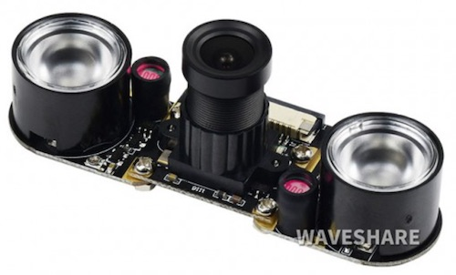
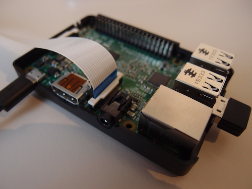
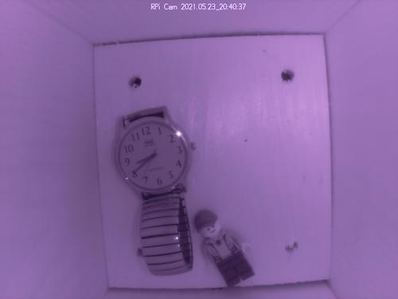
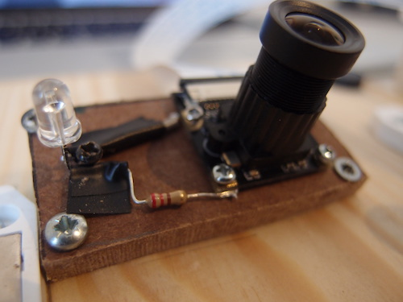
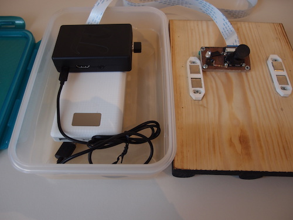
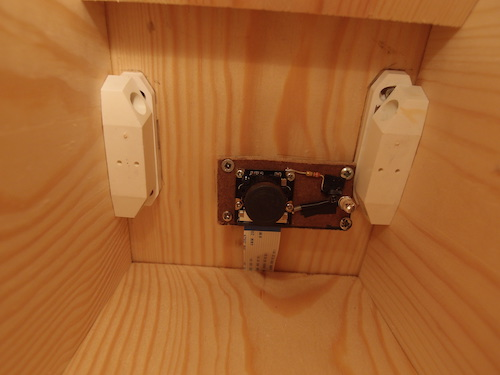
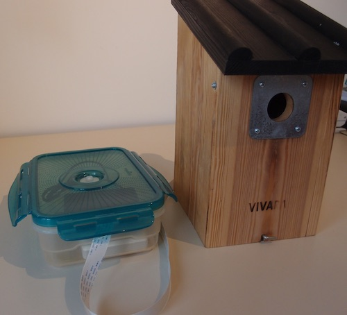

My birdhouse webcam project
Last year we had a nest of great tits in our birdhouse. Hearing little birds tweeting we could hardly resist opening the box and having a look inside. Of course we didn’t since we did not want to disturb the birds. Therefore, this year I decided we needed to install a webcam in our birdhouse such that we could see the little ones grow without disturbing the nest.
Hardware used
- Raspberry Pi Model 2B (or any other model)
- 16GB MicroSDHC card
- WiFi USB dongle (not needed for the newer RPi models or when you use the ethernet connection)
- 20 Ah Powerbank with a micro-USB connector/cable
- Waveshare RPi camera with night vision and adjustable focus
- (Extra long) flex cable
- IR led
- 220 Ohm resistor
- Optional: case for the Raspberry Pi
Tools
- Computer with SD-card slot
- Soldering iron, screws, small screw drivers, some wood, etc
- USB keyboard, HDMI cable and monitor (it is probably possible to setup the RPi via remote connection without these items, but they can be handy for the first steps).
Prepare the SD card
The first step is to put the operating system, Raspberry Pi OS (used to be called Raspbian) on the SD card. You need a computer with an SD card reader for this step. A quick and easy way is to use the Raspberry Pi Imager.
Boot the Raspberry Pi with the SD card
Place the SD card in the slot and connect the Pi to a power supply. For this step it is handy to connect an USB keyboard and a HDMI display to the RPi. When the Raspberry OS is up and running, you might want to enable WiFi access, SSH access, VNC access and enable the camera. All can be done via the settings menu in the RPi Desktop menu. Also it is advisable to change the default login password (you will be prompted if you don’t). In fact, before changing it I regularly lost the WiFi connection, which was fixed after I changed the default login password. Another odd feature is that the RPi did not want to boot when there is no display connected. This can be fixed by adding this line to /boot/config.txt:
hdmi_force_hotplug=1After that you can disconnect the display, login with ssh and reboot with
sudo shutdown -h now
Connect the camera
 There are several camera’s available for the RPi. I chose the Waveshare RPi camera with night vision and adjustable focus (link). The night vision means that this camera has no IR filter. Therefore the colors may look a bit odd in daylight, but the big advantage is that it becomes sensitive to infrared light (more on this later). The camera has an angle of view of 75 degrees. This is sufficiently wide for the birdhouse. This camera also has an adjustable focus, which means that can also produce sharp images when the object is very close (like in a birdhouse). The focal distance can be adjusted manually by rotating the focus ring. This is an advantage over the standard Raspberry Pi NoIR camera, where you first need to remove glue blobs before you can rotate the lens into focus as explained here. The standard flex cable that comes with this camera is only about 15 cm long. In my setup the RPi is further away from the birdhouse, so I bought a 1 m long flex cable.
Turn the camera into a webcam
This section is extremely short due to the awesome RPi-Cam-Web-Interface. When you install this software via the command line (i.e. via the terminal or in an ssh-session), it sets up a web server with which you can view and control the camera remotely from another device via a web page (within your network, or if you want also on the internet).
Camera control LED
There is a red control LED on the camera PCB to indicate that the camera is on. In order to not scare the birds, I turned this one off by adding the following line to /boot/config.txt (see this link):
Disable_camera_led=1
IR LED
This camera also comes with two infrared LED lights that can be mounted on each side of the camera. Without these IR lights the pictures from the camera would still be dark. These two lights would be great in case you want to build your own security camera, however, they are quite an overkill for a birdhouse. Moreover, they actually spill some light into the visible spectrum, which you can see as a faint red light when the lights are on. In addition, they get hot and drain the battery.
Instead I took an old remote control and removed the IR LED. These 5 mm LEDs are ideal for our purposes. Obviously you can also buy a new one for just a few cents. An advantage of a new LED is that you know that the longer leg is the anode. When extracting an LED from a used PCB, you do not know this anymore, however, the “flag” side is usually the cathode (see this link). Since I am not using the standard IR LEDs, I now have two 3,3 V supply solder pads on each side of the camera to which I can connect the LED. You can use the back side of the standard IR LEDs to identify the positive and negative side or use a voltmeter.
Do not connect the LED directly to the 3,3 V power lines, since you will burn your LED very quickly. These LEDs normally operate at a voltage below 2 V. Therefore the LED needs to be connected in series with a resistor. When using a 220 Ohm resistor, the voltage on the LED is 1,15 V and the current is 9,0 mA. This means that the total power dissipated by the LED and resistor is 9,0 times 1,15 equals 30 mW. This is not a lot, but keep in mind that this light is always on (as soon as the RPi is connected to power) and cannot be switch off without an additional cable from the RPi to the camera. The amount of light it produces is still more than sufficient for a birdhouse. I soldered the LED plus resistor to the solder pads on the camera board.
Powerbank
Since my birdhouse is hanging in the middle of my garden, I have not power outlet closeby. Therefore I decided to power the RPi with a powerbank. I have a powerbank with 20 Ah of capacity. It has two USB power outlets. With a USB to micro-USB cable it can easily power a Raspberry Pi. Obviously, when the RPi is close to a power outlet you can simply use a normal power supply.
Mounting
I mounted the camera with the IR LED on a small wooden board, which I attached under an angle to the tilted roof of the birdhouse. From there the flex cable runs to a lunch box which seals the Raspberry Pi and powerbank from rain.
 Useful links
- Bird box from Raspberry Pi Projects
- Getting started with the Pi Camera from Raspberry Pi Projects
- Birdbox Camera from Instructables with a power-over-ethernet solution and an incredibly powerful IR led lamp.
- RPi-Cam-Web-Interface